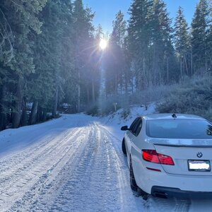

EDUCATION
University of California – Santa Barbara
Sep 2018 – Dec 2021Bachelor of Science in Physics
- Overall GPA: 3.67/4.00
- Awards: Dean’s Honour (L&S) in Winter 2021
Admitted Schools
Johns Hopkins University
Whiting School of Engineering
- M.S.E. program in Electrical and Computer Engineering

SHORT ANSWERS
List programming languages I had used and my proficiency level with each.
- Python Python is the programming language I am best at and most proficient in. I first learned Python during my summer internship in my freshman year and then systematically learned it through Phys 129L (please refer to https://github.com/Yutao-Zhou/129L for my assignments). In the meantime, I have been teaching myself Python through tutorials, online classes, and practices. I have gong over 100 sample questions on Leetcode and will continue practicing after enrolling in graduate school (please refer to https://leetcode.com/YutaoZhou/ for my Leetcode homepage and https://github.com/Yutao-Zhou/Leetcode for my Leetcode solution to the problems that I have solved). In addition, I have done many projects with Python. For example, I combined Python and HTML to develop an automatic email sending program so that I could send appointments to students efficiently as the Peer Advisor of the College of Letter and Sciences. Thus, I find Python both intriguing and useful.
- MATLAB MATLAB is the most commonly used software for physics students, and I have mastered it for a long time.
- Latex I write homework and papers in Latex and am very skillful at it. Latex is a kind of go-to software for me.
- Shell Script I have done some assignments with Shell Script, and I am familiar with the fundamentals.
My motivation in changing fields.
I have always been interested in electricity and electronics. My undergraduate major in physics is the basis of electricity and electronics, which taught me to understand various principles and phenomena from the essence of matter. I will turn to a more application-oriented area, electrical and computer engineering, to return to my original passion in graduate school. I have prepared for this long-planned transition by taking Analog Electronics and Physics Labs on circuits as well as practicing Python in various ways. I think this is the exact time for me to enter the ECE field.
In addition, my decision to switch to ECE is also based on my prediction of the industry's future. Although quantum computing is a heated topic right now, and simple quantum computers can be made by arranging quantum matrices using optical tweezers, I think the potential of humanity lies more in software than in hardware. Hardware's advances may be limited by materials' R&D (e.g., there is an upper limit to how fast a transistor can switch), whereas the potential in software's development is limitless. We can trade in time complexity for space complexity and constantly optimize the code for different needs. In short, ECE is an art of science and technology.
Three Electrical or Computer Engineering courses I had taken that were the most advanced.
- PHYS 127AL – Analog Electronics Passive circuits, diodes, transistors, field effect transistors, operational amplifiers, feedback and control. Design, building and testing of analog circuits.
- PHYS 129L – Introduction to Scientific Computation A survey of computers, programming, and computational techniques for the natural sciences. Physical foundations of computation, binary arithmetic, computer architecture, programming languages, operating systems, UNIX shell and file systems. Programming tools, variables and data structures, expressions, control flow, files, functions and scoping, objects, error handling, debugging, graphics, text processing, networking, data acquisition and transfer. Mathematics and algorithms for data processing and analysis, numerical methods, random numbers and simulation.
- PHYS 128AL – Advanced Experimental Physics Selected experiments in physics, i.e. saturated absorption spectroscopy, muon lifetime measurements, pulsed nuclear magnetic resonance, Mossbauer Effect. Develop skills in detailing observations in a scientific notebook, data collection and error analysis, operating complex physical apparatus, and scientific communication.
Three courses I had taken in related technical areas that were the most advanced.
- PHYS 102 – Linear Algebra and Applications Linear Algebra: vector spaces, operators, spectral decomposition. Topics may include Sturm-Liouville equations, special functions, group theory.
- PHYS 115C – Quantum Mechanics Inadequacies of classical physics and quantum mechanical resolutions. The postulates of quantum mechanics. Schrodinger’s equation, measurements, operators, and observables. Angular momentum and spin, the exclusion principle, perturbation theory, and scattering theory. Applications to atomic, molecular, and nuclear physics.
- PHYS 104 – Advanced Mechanics Calculus of variations. Lagrangian and Hamiltonian mechanics. Non-inertial reference frames. Coupled oscillations. Strings. Waves. Topics from: Dynamics of rigid bodies, continuum mechanics, fluid mechanics.
ACADEMIC PROJECTS

Analog Electronics Laboratories
PHYS 127AL Course Projects
Introduction to Scientific Computing Laboratories
PHYS 129L Course Projects
Auroral Morphology Classification Based on Unsupervised Clustering
Advisor: Prof. Ziming Zou (National Space Science Center, CAS)
SKILLS & SPECIALTIES
- Python
- MATLAB
- Latex
- Auto Desk CAD
- EasyEDA
- Shell Script
- MS Office series
- Chinese Mandarin (Native)
- English (Proficiently fluent)
- Golf
- Bowling
- Karting
- Singing
- Archery
- Reading
- Digging into Python programming
EFFORT IN DIVERSITY
-
Once I shared an accommodation with a white and a black student for almost a year. I noticed that the white student rarely talked to his African American roommate; when he spoke, he spoke primarily to me. His intentional ignoring created a peculiar atmosphere in the dormitory and made the my colored brother very uncomfortable, who protested in his own way by avoiding communication with him. This experience of living in a multi-racial environment echoes what I learn from the book Invisible Man and my readings for the course BLST 36 such as The Bluest Eye. I have become fully aware that ethnic and racial discrimination does not necessarily take a vocal or manifest form. It could be expressed by silence, by actions that should be taken but are not, and most horribly, by pretending that the inequality does not exist. My personal experience always reminds me that despite being a ‘melting pot’, the US is haunted by the problem of racial inequality, even in California which is more liberal and with greater diversity.
I have participated in a physical circuit, a volunteer program of teaching physics experiments to K12 students. Although we did not directly engage with the issue of racial equality, we promoted diversity and social equality by creating a friendly and inclusive learning environment in the program. For example, as we understood that not all schools we visited could afford a laboratory, we resorted to home experiments, using daily supplies to demonstrate physical phenomena. I helped the pupils understood specific heat capacity with two balloons. I filled one with air and the other with water before putting them on fire. When the former exploded while the latter remained intact, I explained that it was because water is a better heat absorber. To demonstrate the relation between hydrostatic pressure and fluid depth, I filled a plastic bag with water and pierced two holes with pencils at different heights. As I pulled out the pencils, I asked the students to observe closely the different speeds of the two flows coming out of holes with the same diameters. The experiments were so simple and the materials so easy to come by that all students, regardless of their backgrounds and financial statuses, would be able to repeat the experiments at home and gained physics knowledge in their daily life. The fundamental goal of our endeavor was to increase access to physics experiment, to give more and more people, especially the disadvantaged and underrepresented, the opportunities to learn physics, and to kindle their interest in it. This is also the reason I want to pursue a higher degree - to develop better products through my knowledge and skills, so that more people can enjoy the convenience brought by technological advancement, thereby promoting overall social equality.